Mosquito Net Replacement Completed in uPVC Sliding Doors – Nyanappanahalli, Near Hulimavu Main Road, Bengaluru
🛠️ Mosquito Mesh Replacement📍 Hulimavu Bengaluru📅 2026-08-30
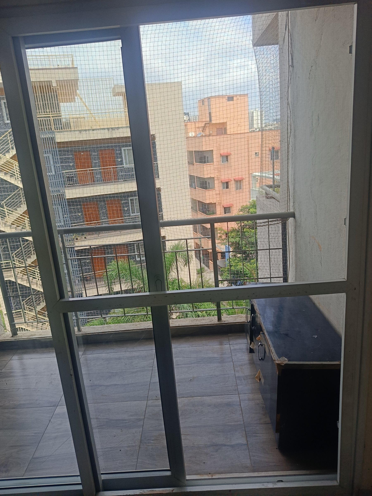
After / Completed Work🦟 Mosquito Net Replacement Completed in uPVC Sliding Doors – Nyanappanahalli, Near Hulimavu Main Road, Bengaluru
Another successful mosquito net replacement project completed by Kutbi Aluminium Glass & Hardware at Nyanappanahalli, near Hulimavu Main Road, Bengaluru.
The existing mesh was damaged and allowing insects to enter the home. Our team replaced the old mosquito net with a new high-quality mesh, ensuring smooth sliding operation, improved ventilation, and effective protection from mosquitoes and insects.
✅ uPVC Sliding Door Mosquito Net Replacement
✅ Smooth Sliding Function Restored
✅ Durable & High-Quality Mesh Installed
✅ Clean & Professional Installation
✅ Service Completed at Nyanappanahalli, Hulimavu
Looking for mosquito net installation or replacement for uPVC windows and doors in Bengaluru? Contact Kutbi Aluminium Glass & Hardware for reliable service.
📞 Call/WhatsApp: 9979204616
#MosquitoNetReplacement #UPVCSlidingDoor #MosquitoMeshBangalore #Hulimavu #Nyanappanahalli #BannerghattaRoad #KutbiAluminiumGlassAndHardware #MosquitoNetInstallation #BangaloreServices
Magnetic Mosquito Net for Door Installation Completed at BTM Layout, Bangalore 🔹
🛠️ Magnetic Mosquito Mesh📍 Btm layout Bengaluru📅 2026-08-28
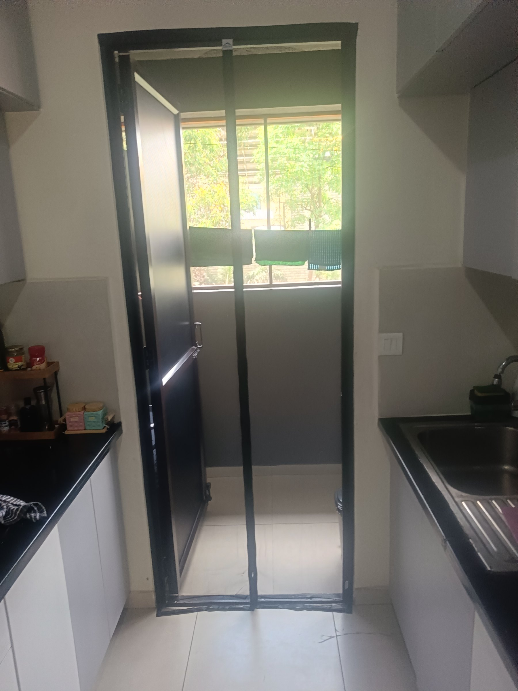
After / Completed Work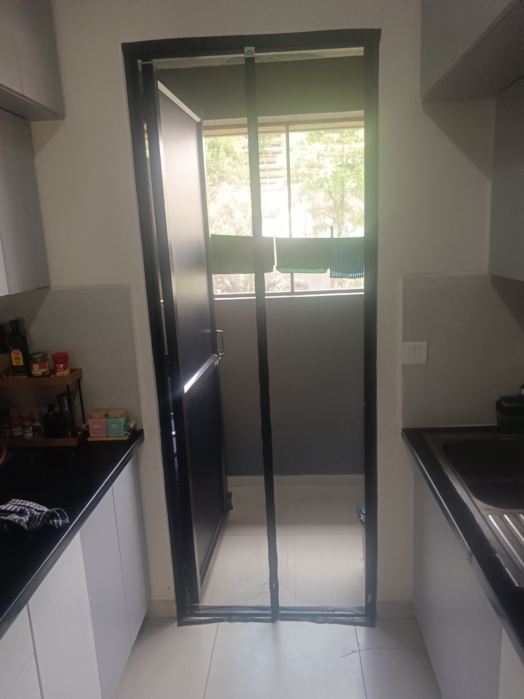
After / Completed Work🔹 Magnetic Mosquito Net for Door Installation Completed at BTM Layout, Bangalore 🔹
Kutbi Aluminium Glass & Hardware successfully completed a Magnetic Mosquito Net Door installation project in BTM Layout, Bangalore.
Our magnetic mosquito nets are designed to keep mosquitoes, flies, and insects out while allowing fresh air and natural ventilation into your home. The magnetic closing system ensures smooth access and automatic closing after every use, making it a convenient and effective solution for homes and apartments.
✅ Magnetic Mosquito Net Door Installation
✅ Strong Magnetic Self-Closing System
✅ Easy Access for Family Members
✅ Fresh Air Without Insects
✅ Durable & Neat Finish
✅ Suitable for Main Doors, Balcony Doors & Utility Doors
If you are looking for Magnetic Mosquito Net Installation in BTM Layout, Bannerghatta Road, JP Nagar, Arekere, Hulimavu, Electronic City, or nearby areas in Bangalore, contact Kutbi Aluminium Glass & Hardware today.
📍 Kalena Agrahara, Bannerghatta Road, Bengaluru
📞 9979204616
#MagneticMosquitoNet #MosquitoNetInstallation #MosquitoNetDoor #BTMLayout #BTMLayoutBangalore #BangaloreMosquitoNet #DoorMosquitoNet #MagneticMeshDoor #KutbiAluminiumGlassAndHardware #BannerghattaRoad #JPNagar #Arekere #Hulimavu #ElectronicCity #Bengaluru
Aluminium Window Repair Service in Bengaluru
🛠️ Aluminium Window Repair📍 Bengaluru📅 2026-08-28
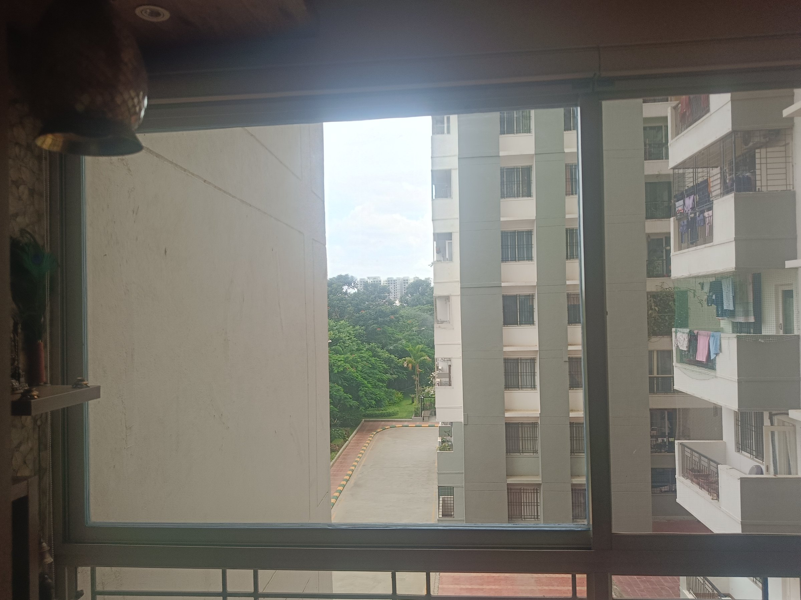
After / Completed Work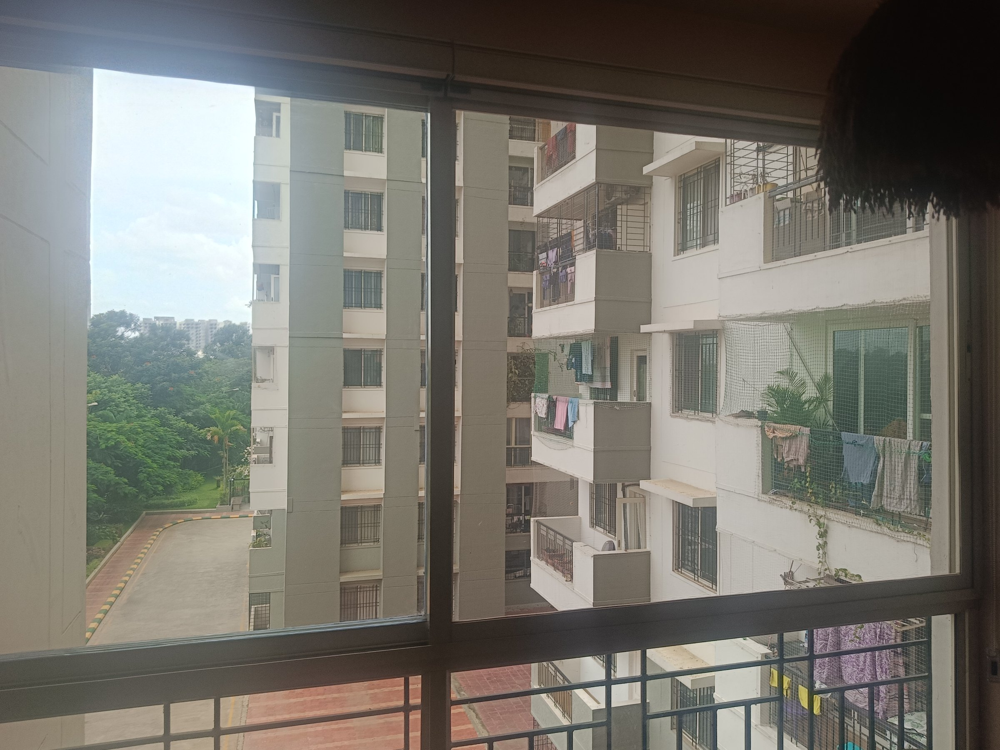
After / Completed Work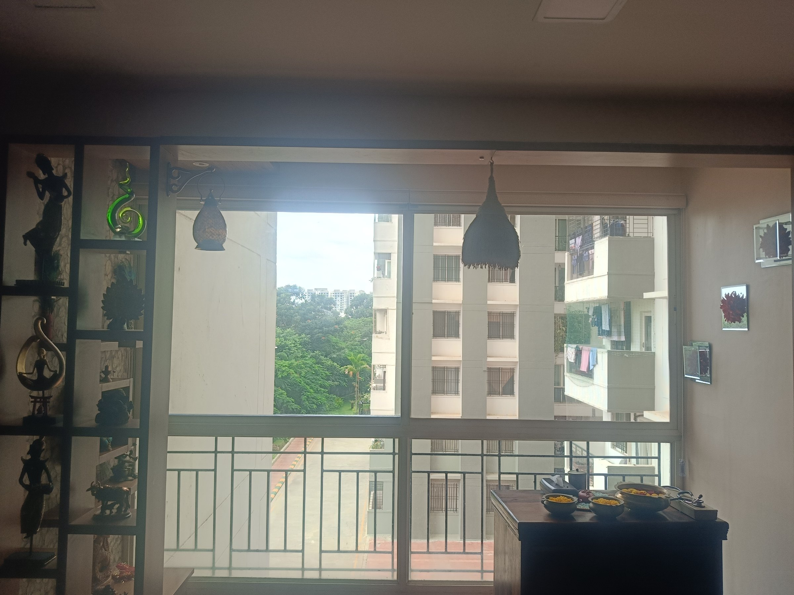
After / Completed WorkAluminium Window Repair Service in Bengaluru
Aluminium Window Repair Work Completed by Kutbi Aluminium Glass & Hardware
Kutbi Aluminium Glass & Hardware successfully completed aluminium window repair and servicing work in Bengaluru. Our team inspected the window, identified the issues affecting its operation, and carried out the required repair work to restore smooth and proper functioning.
Work Completed
✅ Aluminium sliding window inspection
✅ Window repair and servicing
✅ Sliding mechanism checked and serviced
✅ Window movement improved
✅ Proper opening and closing restored
✅ Professional on-site repair completed
If your aluminium window is jammed, difficult to slide, making noise, loose, or not closing properly, Kutbi provides professional aluminium window repair and maintenance services across Bengaluru.
Service: Aluminium Window Repair
Location: Bengaluru, Karnataka
Contact: 9979204616
Kutbi Aluminium Glass & Hardware
Your Satisfaction, Our Motivation
Aluminium Window Wheel Replacement & Service in Bengaluru
🛠️ Sliding Window Wheel Replacement📍 Whitefield, Bengaluru📅 2026-08-28
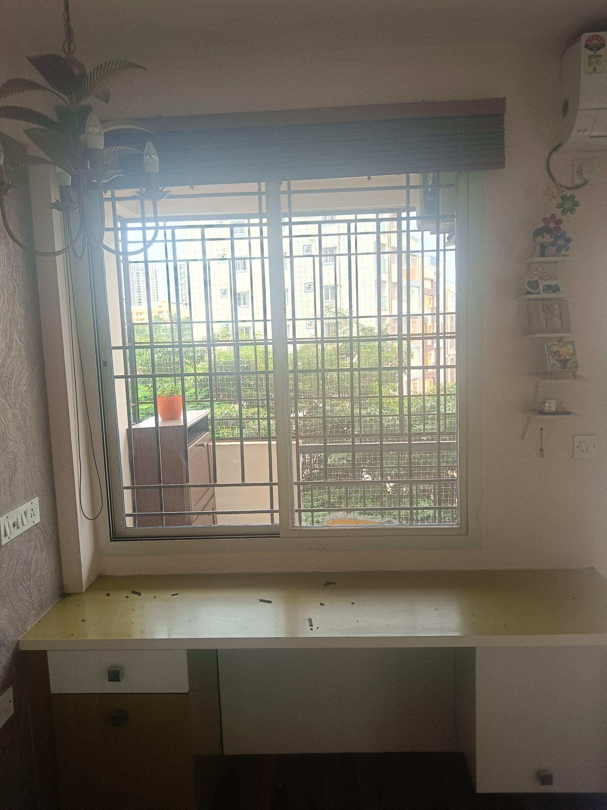
After / Completed WorkAluminium Window Wheel Replacement & Service in Bengaluru
Project Completed by Kutbi Aluminium Glass & Hardware
Kutbi Aluminium Glass & Hardware successfully completed wheel replacement and servicing of aluminium sliding windows in Bengaluru.
The existing window wheels had become worn and the sliding movement was not smooth. Our team inspected the window rollers, removed the damaged wheels, installed new replacement wheels, and serviced the sliding mechanism.
Work Completed
✅ Aluminium sliding window wheel replacement
✅ Damaged roller removal
✅ New window wheels installed
✅ Sliding track and mechanism serviced
✅ Window movement improved
✅ Smooth opening and closing restored
Regular window servicing and timely wheel replacement can help prevent further damage to the sliding track and window frame.
If your aluminium sliding windows are hard to move, getting stuck, making noise, or not sliding properly, contact Kutbi Aluminium Glass & Hardware for professional window wheel replacement and repair service in Bengaluru.
Service: Aluminium Window Wheel Replacement & Repair
Location: Bengaluru, Karnataka
Contact: 9979204616
Kutbi Aluminium Glass & Hardware
Your Satisfaction, Our Motivation
Rubber Beading Replacement Completed in Whitefield, Bengaluru
🛠️ Aluminium Window Rubber Beading Replacement📍 Whitefield, Bengaluru📅 2026-08-28
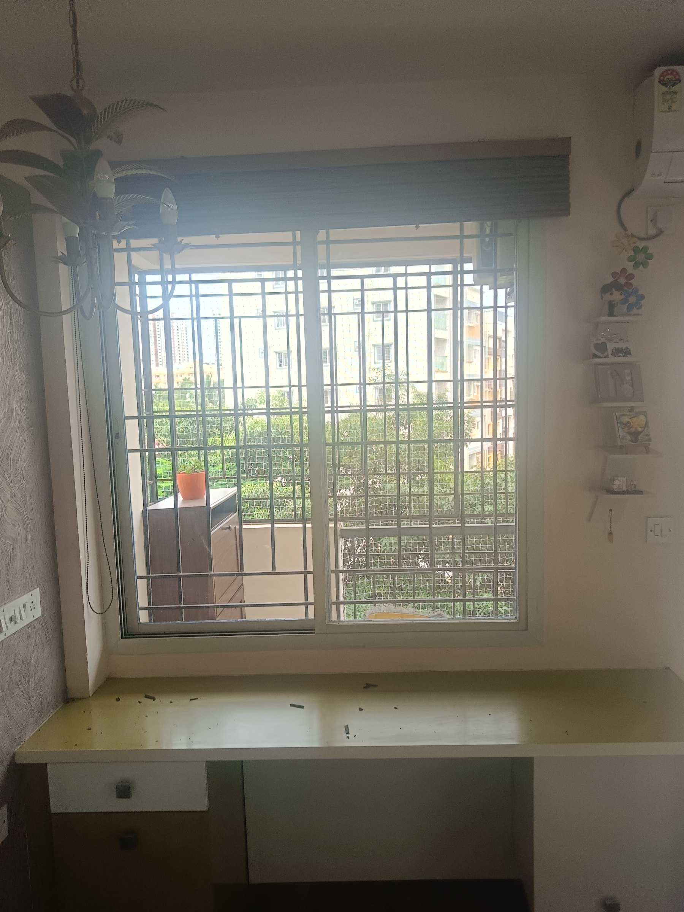
After / Completed WorkRubber Beading Replacement Completed in Whitefield, Bengaluru
Project Completed by Kutbi Aluminium Glass & Hardware
We successfully completed a rubber beading replacement service for aluminium windows at Whitefield, Bengaluru. Over time, old and damaged rubber beading can shrink, crack, or become loose, causing water leakage, dust entry, air gaps, and glass vibration.
Our team carefully removed the worn-out rubber beading and installed high-quality new rubber beading to ensure a secure glass fit, improved sealing, and better protection against dust and rain. The windows are now functioning smoothly with a clean and professional finish.
Work Details
✅ Old rubber beading removed
✅ New premium-quality rubber beading installed
✅ Improved window sealing and stability
✅ Reduced dust, noise, and water leakage
✅ Professional on-site service completed
If your aluminium or uPVC windows have loose glass, damaged rubber beading, water leakage, or rattling issues, Kutbi Aluminium Glass & Hardware provides reliable repair and replacement services across Bengaluru.
Service Area: Whitefield, Bengaluru, Karnataka
Contact: 9979204616
Kutbi Aluminium Glass & Hardware
Your Satisfaction, Our Motivation
Mosquito Net Installation Completed in Hosa road ,Bengaluru! 🪟✨
🛠️ Mosquito Mesh Replacement📍 Hosa road, Bengaluru📅 2026-08-26
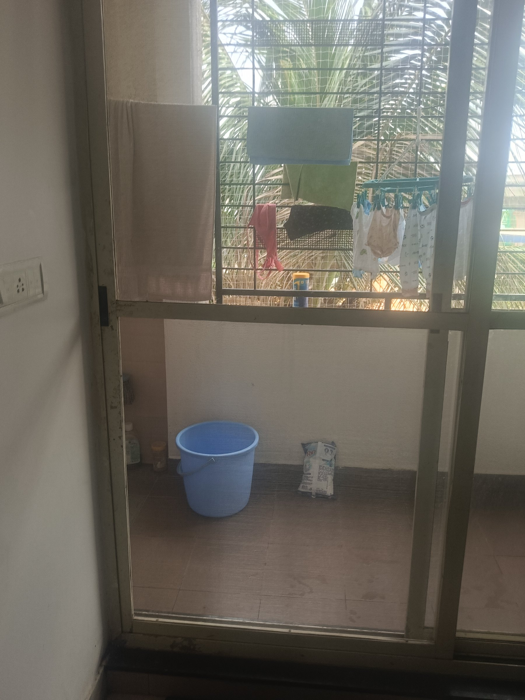
After / Completed Work🦟 Mosquito Net Installation Completed in Krishnarajapuram, Bengaluru! 🪟✨
Another successful mosquito net installation completed by Kutbi Aluminium Glass & Hardware at Lemon Leaf, 1st Main Road, Kodigehalli, Krishnarajapuram, Bengaluru, Karnataka – 560067.
Our team installed a practical mosquito mesh solution to help keep mosquitoes and insects outside while allowing fresh air and ventilation inside.
✅ Mosquito Net Installation
✅ Mosquito Mesh for Windows
✅ Velcro Mosquito Mesh
✅ Window Mesh Replacement
✅ Magnetic & Pleated Mosquito Net Solutions
✅ Professional Installation & Service
📞 Call / WhatsApp: 9979204616
📍 Serving Krishnarajapuram, Kodigehalli and across Bengaluru
Kutbi Aluminium Glass & Hardware — Your Satisfaction, Our Motivation.
#KutbiAluminium #MosquitoNetBangalore #MosquitoMeshBangalore #MosquitoNetInstallation #WindowMosquitoNet #VelcroMosquitoMesh #MosquitoMeshInstallation #Krishnarajapuram #Kodigehalli #Bengaluru #Bangalore #WindowMesh
uPVC Sliding Window Installation Completed in Kothnur, Bengaluru!
🛠️ uPVC Window Installation📍 Kothnur bangalore📅 2026-08-26
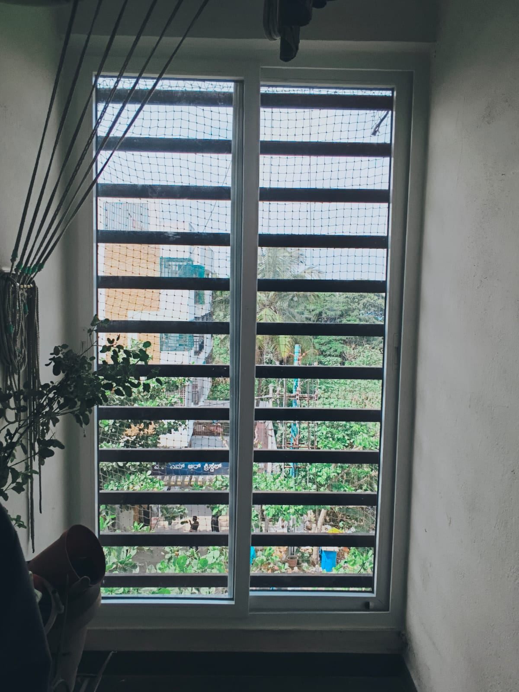
After / Completed Work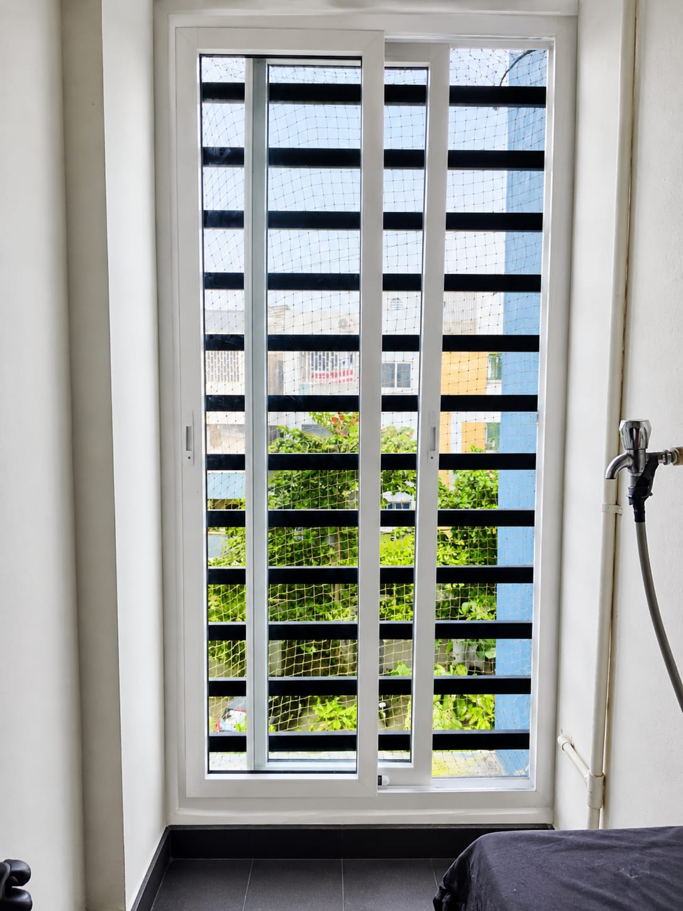
After / Completed Work🪟✨ uPVC Sliding Window Installation Completed in Kothnur, Bengaluru!
Another successful uPVC sliding window installation completed by Kutbi Aluminium Glass & Hardware at 3rd Block, Gunina Mellow, Kothnur, 8th Phase, J.P. Nagar, Bengaluru, Karnataka – 560076.
Our team completed the installation with proper fitting and finishing for smooth and reliable window operation.
✅ uPVC Sliding Window Installation
✅ uPVC Windows & Doors
✅ Sliding Window Installation
✅ Window Repair & Maintenance
✅ Aluminium & uPVC Window Services
✅ Professional Installation & Service
📞 Call / WhatsApp: 9979204616
📍 Serving Kothnur, J.P. Nagar, Bannerghatta Road, Gottigere, Arekere, Bilekahalli, Hulimavu and across Bengaluru
Kutbi Aluminium Glass & Hardware — Your Satisfaction, Our Motivation.
#KutbiAluminium #UPVCSlidingWindow #UPVCWindowInstallation #UPVCWindowsBangalore #UPVCWindowsAndDoors #SlidingWindowInstallation #WindowInstallationBangalore #Kothnur #JPnagar #BannerghattaRoad #Gottigere #Bengaluru #Bangalore
uPVC Sliding Window Wheel Replacement & Track Repair Completed in , Doddakammanahalli Main Rd, Bannerghatta RdBengaluru! 🪟✨
🛠️ uPVC Sliding Window Repair📍 Doddakammanahalli Main Rd, Bannerghatta Rd📅 2026-08-26
 Before
Before Before
Before🔧 uPVC Sliding Window Wheel Replacement & Track Repair Completed in Kalena Agrahara, Bengaluru! 🪟✨
Another successful uPVC sliding window wheel replacement and track repair completed by Kutbi Aluminium Glass & Hardware at Survey No. 10/1, 11/1, 11/2, Doddakammanahalli Main Road, Bannerghatta Road, Kalena Agrahara, Bengaluru, Karnataka – 560076.
The sliding window was serviced to improve smooth movement and proper operation.
✅ uPVC Sliding Window Wheel Replacement
✅ uPVC Window Track Repair
✅ Sliding Window Repair
✅ Window Roller & Wheel Replacement
✅ Window Lock & Handle Repair
✅ Aluminium & uPVC Window & Door Services
📞 Call / WhatsApp: 9979204616
📍 Serving Kalena Agrahara, Bannerghatta Road, Gottigere, Bilekahalli, Arekere, Hulimavu and across Bengaluru
Kutbi Aluminium Glass & Hardware — Your Satisfaction, Our Motivation.
#KutbiAluminium #UPVCWindowRepair #UPVCSlidingWindow #UPVCWindowWheelReplacement #WindowWheelReplacement #WindowTrackRepair #SlidingWindowRepair #UPVCWindowsBangalore #WindowRepairBangalore #BannerghattaRoad #KalenaAgrahara #Gottigere #Bengaluru #Bangalore
Broken Glass Replacement Completed in Bilekahalli, Bengaluru! 🪟✨
🛠️ Broken Glass Replacement📍 Bilekahalli, Bengaluru📅 2026-08-26
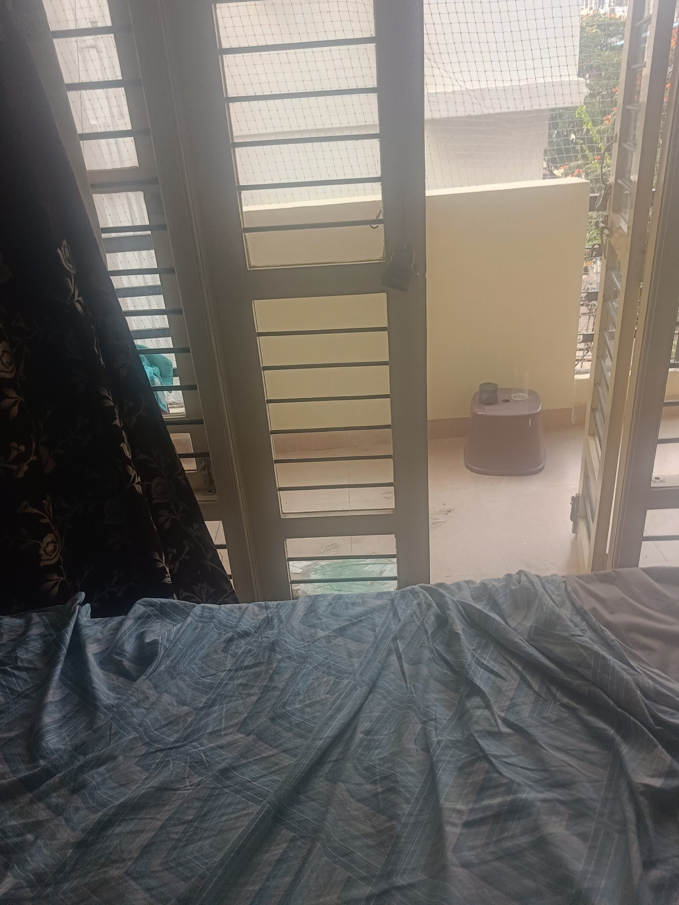
After / Completed Work🔧 Broken Glass Replacement Completed in Bilekahalli, Bengaluru! 🪟✨
Another successful broken glass replacement completed by Kutbi Aluminium Glass & Hardware at Gangaparameshwari Nagar, Kodichikknahalli, Vijaya Bank Layout, Bilekahalli, Bengaluru, Karnataka – 560076.
We provide professional glass replacement, aluminium window repair, sliding window repair, door repair, and aluminium & uPVC window and door services across Bengaluru.
✅ Broken Glass Replacement
✅ Aluminium Window & Door Repair
✅ Sliding Window Repair
✅ uPVC Window & Door Repair
✅ Glass & Hardware Services
✅ Professional Installation & Service
📞 Call / WhatsApp: 9979204616
📍 Serving Bengaluru & nearby areas
Kutbi Aluminium Glass & Hardware — Your Satisfaction, Our Motivation.
#KutbiAluminium #BrokenGlassReplacement #GlassReplacementBangalore #GlassRepairBangalore #Bilekahalli #VijayaBankLayout #Kodichikknahalli #GangaparameshwariNagar #Bangalore #AluminiumWindowRepair #SlidingWindowRepair #UPVCWindowsBangalore #AluminiumWindowsBangalore #WindowRepairBangalore
Aluminium Openable Door Rubber Beading Replacement & Service Completed in BTM Layout, Bangalore
🛠️ Aluminium Door Repair📍 Btm layout Bangalore📅 2026-08-25
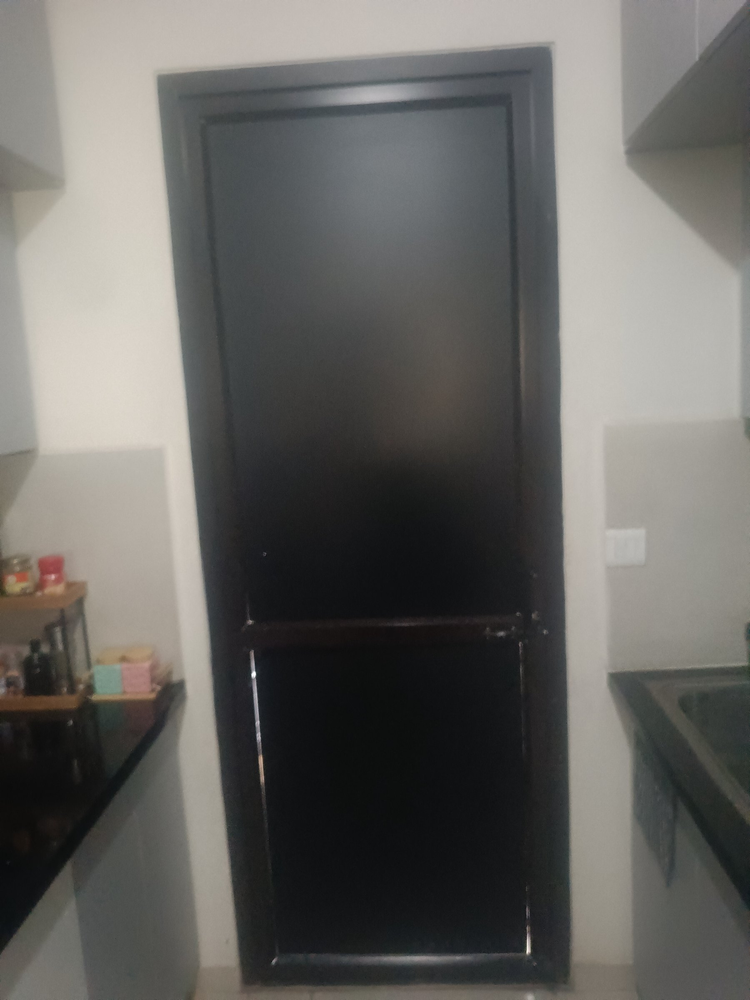
After / Completed Work🚪 Aluminium Openable Door Rubber Beading Replacement & Service Completed in BTM Layout, Bangalore
Another successful service completed by Kutbi Aluminium Glass & Hardware in BTM Layout, Bangalore. Our team carried out professional aluminium openable door rubber beading replacement and complete door servicing to restore smooth operation, improve sealing, and prevent dust, noise, and water leakage.
✅ Aluminium Openable Door Rubber Beading Replacement
✅ Door Alignment & Adjustment
✅ Door Closing Issue Repair
✅ Noise & Air Gap Reduction
✅ Water Leakage Prevention
✅ Complete Door Service & Maintenance
If your aluminium door has damaged rubber beading, air gaps, water leakage, or is not closing properly, our experts can help with fast and reliable service across Bangalore.
📍 Service Location: BTM Layout, Bangalore
📞 Call/WhatsApp: 9979204616
📧 ammargolwala@gmail.com
#KutbiAluminiumGlassAndHardware #AluminiumDoorRepair #RubberBeadingReplacement #AluminiumOpenableDoor #DoorService #BTMLayout #BTMLayoutBangalore #AluminiumDoorMaintenance #DoorRepairBangalore #WindowAndDoorRepair #BannerghattaRoad #Gottigere #BangaloreServices #AluminiumFabrication #UPVCRepair #BangaloreBusiness
Velcro Mosquito Mesh Installation – BTM Layout
🛠️ Velcro Mosquito Mesh📍 Btm layout Bangalore📅 2026-08-25
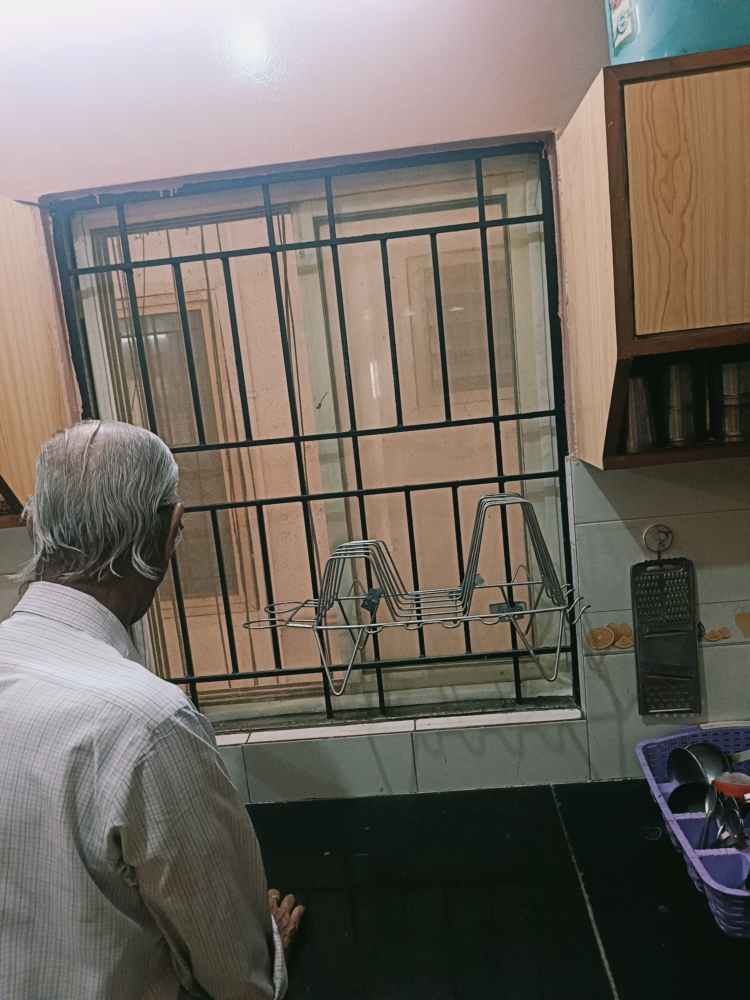
After / Completed WorkVelcro Mosquito Mesh Installation – BTM Layout
🦟 Velcro Mosquito Mesh Installation Completed in BTM Layout, Bangalore! ✅
Kutbi Aluminium Glass & Hardware successfully completed Velcro mosquito mesh installation for windows at BTM Layout, Bangalore.
The Velcro mesh provides a practical solution for keeping mosquitoes and insects outside while allowing fresh air and ventilation inside. 🏠✨
📍 Location: BTM Layout, Bangalore
🔧 Service: Velcro Mosquito Mesh Installation
🏢 By: Kutbi Aluminium Glass & Hardware
📞 Call/WhatsApp: 9979204616
#KutbiAluminium #VelcroMosquitoMesh #MosquitoMeshBangalore #MosquitoNetBangalore #MosquitoMeshInstallation #BTMLayout #BTMBangalore #WindowMosquitoMesh #MosquitoNetInstallation #BangaloreHomeServices #AluminiumWindows #UPVCWindows
Bathroom Broken Glass Replacement – Bannerghatta Road
🛠️ Broken Glass Replacement📍 Near minakshi temple Bannerghatta road📅 2026-08-25
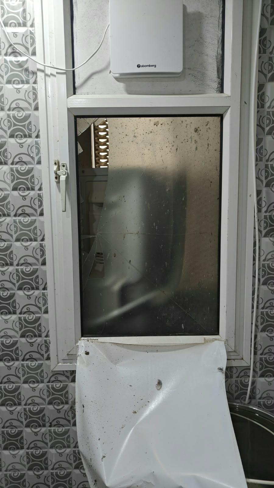
After / Completed WorkBathroom Broken Glass Replacement – Bannerghatta Road
🛠️ Bathroom Broken Glass Replacement Completed! ✨
Another glass replacement work successfully completed by Kutbi Aluminium Glass & Hardware near Meenakshi Temple, Bannerghatta Road, Bangalore.
We carefully removed the damaged bathroom glass and replaced it with new glass, ensuring a neat and secure finish. ✅
📍 Location: Near Meenakshi Temple, Bannerghatta Road, Bangalore
🔧 Service: Bathroom Broken Glass Replacement
🏠 By: Kutbi Aluminium Glass & Hardware
For broken glass replacement, aluminium & uPVC window/door repair, lock replacement, rubber beading and other glass & hardware services, contact us.
📞 Call/WhatsApp: 9979204616
#KutbiAluminium #BrokenGlassReplacement #BathroomGlassReplacement #GlassReplacementBangalore #GlassRepairBangalore #BannerghattaRoad #MeenakshiTemple #Bangalore #AluminiumGlassHardware #WindowRepairBangalore #UPVCRepairBangalore #GlassRepair #HomeRepairBangalore
Aluminium Sliding Window Wheel Replacement & Service in Gottigere, Bannerghatta Road, Bangalore
🛠️ Aluminium Window Wheel Replacement📍 Gottigere, Bannerghatta Road, Bangalore.📅 2026-08-24
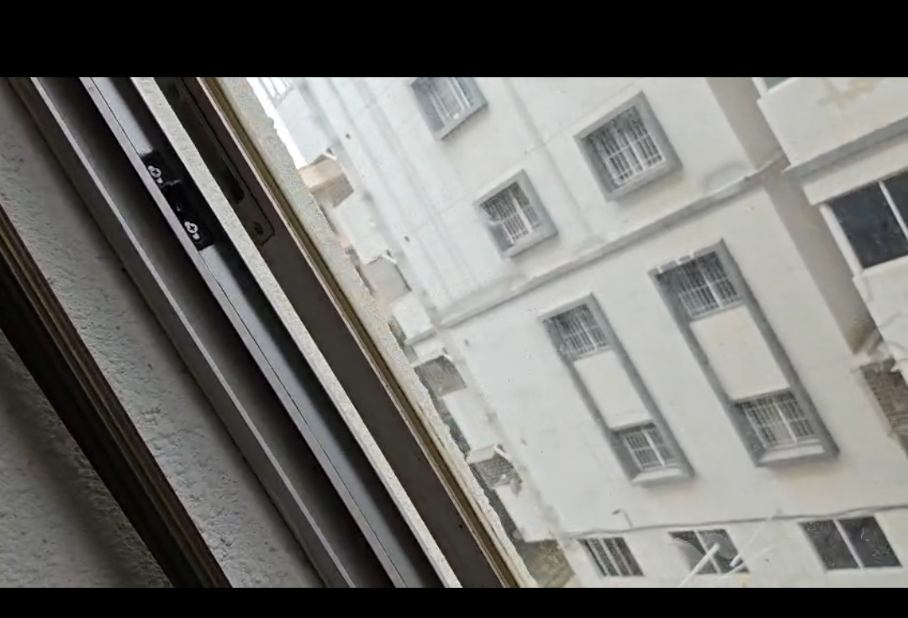
After / Completed WorkAluminium Sliding Window Wheel Replacement & Service in Gottigere, Bannerghatta Road, Bangalore
Kutbi Aluminium Glass & Hardware recently completed an aluminium sliding window wheel replacement and servicing work in Gottigere, Bannerghatta Road, Bangalore.
Over time, sliding window wheels and rollers can become worn, damaged, or stuck. This can make the window difficult to operate, create unwanted noise, or prevent smooth opening and closing.
Aluminium Sliding Window Wheel Replacement
For this service, our team inspected the sliding window and identified the worn-out wheels. The damaged wheels were replaced and the window was serviced and adjusted to improve its movement.
Our aluminium sliding window repair services include:
- Aluminium sliding window wheel replacement
- Sliding window roller replacement
- Window wheel repair
- Sliding window servicing
- Window track cleaning and adjustment
- Jammed sliding window repair
- Aluminium window alignment
- Sliding window lock repair
- Window handle replacement
- General aluminium window maintenance
Smooth Sliding Window Operation
Damaged wheels can place additional pressure on the window frame and track. Replacing worn wheels and properly servicing the sliding mechanism can help restore smoother operation and make the window easier to use.
At Kutbi Aluminium Glass & Hardware, we provide aluminium and uPVC window repair and maintenance services for homes, offices, shops, and commercial properties across Bangalore.
Service Completed in Gottigere
This aluminium sliding window wheel replacement and servicing project was completed in Gottigere, Bannerghatta Road, Bangalore.
If your aluminium sliding window is stuck, difficult to slide, making noise, or not moving properly, professional wheel replacement and servicing may solve the problem.
Need Aluminium Sliding Window Wheel Replacement in Bangalore?
Contact Kutbi Aluminium Glass & Hardware for aluminium window repair, sliding window wheel replacement, roller replacement, lock repair, handle replacement, and other window services.
📍 Service Area: Gottigere, Bannerghatta Road, Bangalore
📞 Call: 9979204616
Keywords: Aluminium Sliding Window Wheel Replacement Bangalore, Sliding Window Roller Replacement Bangalore, Aluminium Window Repair Gottigere, Sliding Window Repair Bannerghatta Road, Window Wheel Replacement Bangalore, Aluminium Sliding Window Service Bangalore.
#AluminiumSlidingWindow #WindowWheelReplacement #SlidingWindowRepair #WindowRollerReplacement #AluminiumWindowRepair #Gottigere #BannerghattaRoad #Bangalore #KutbiAluminiumGlassAndHardware
Aluminium Sliding Window Wheel Replacement & Service in Gottigere, Bannerghatta Road, Bangalore
🛠️ Aluminium Window Roller Replacement📍 Gottigere, Bannerghatta Road, Bangalore📅 2026-08-24
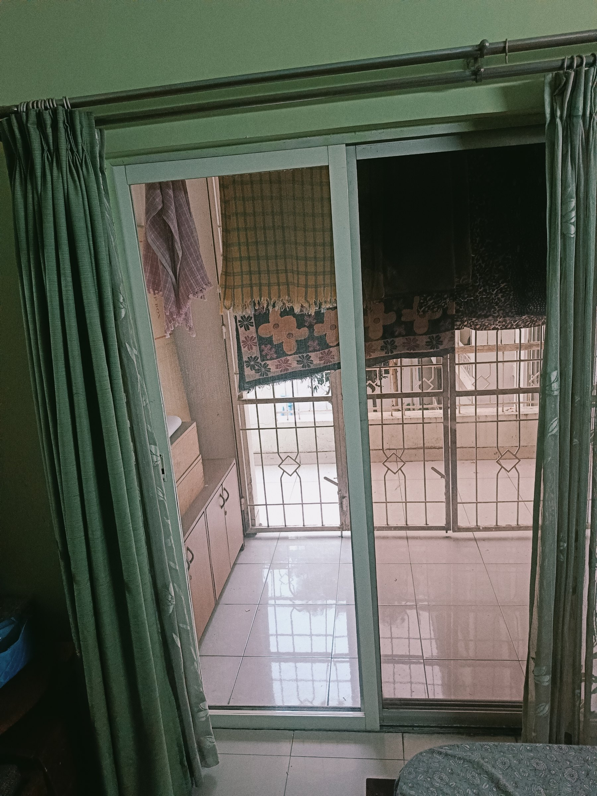
After / Completed WorkAluminium Sliding Window Wheel Replacement & Service in Gottigere, Bannerghatta Road, Bangalore
Kutbi Aluminium Glass & Hardware recently completed an aluminium sliding window wheel replacement and servicing work in Gottigere, Bannerghatta Road, Bangalore.
Over time, sliding window wheels and rollers can become worn, damaged, or stuck. This can make the window difficult to operate, create unwanted noise, or prevent smooth opening and closing.
Aluminium Sliding Window Wheel Replacement
For this service, our team inspected the sliding window and identified the worn-out wheels. The damaged wheels were replaced and the window was serviced and adjusted to improve its movement.
Our aluminium sliding window repair services include:
- Aluminium sliding window wheel replacement
- Sliding window roller replacement
- Window wheel repair
- Sliding window servicing
- Window track cleaning and adjustment
- Jammed sliding window repair
- Aluminium window alignment
- Sliding window lock repair
- Window handle replacement
- General aluminium window maintenance
Smooth Sliding Window Operation
Damaged wheels can place additional pressure on the window frame and track. Replacing worn wheels and properly servicing the sliding mechanism can help restore smoother operation and make the window easier to use.
At Kutbi Aluminium Glass & Hardware, we provide aluminium and uPVC window repair and maintenance services for homes, offices, shops, and commercial properties across Bangalore.
Service Completed in Gottigere
This aluminium sliding window wheel replacement and servicing project was completed in Gottigere, Bannerghatta Road, Bangalore.
If your aluminium sliding window is stuck, difficult to slide, making noise, or not moving properly, professional wheel replacement and servicing may solve the problem.
Need Aluminium Sliding Window Wheel Replacement in Bangalore?
Contact Kutbi Aluminium Glass & Hardware for aluminium window repair, sliding window wheel replacement, roller replacement, lock repair, handle replacement, and other window services.
📍 Service Area: Gottigere, Bannerghatta Road, Bangalore
📞 Call: 9979204616
Keywords: Aluminium Sliding Window Wheel Replacement Bangalore, Sliding Window Roller Replacement Bangalore, Aluminium Window Repair Gottigere, Sliding Window Repair Bannerghatta Road, Window Wheel Replacement Bangalore, Aluminium Sliding Window Service Bangalore.
#AluminiumSlidingWindow #WindowWheelReplacement #SlidingWindowRepair #WindowRollerReplacement #AluminiumWindowRepair #Gottigere #BannerghattaRoad #Bangalore #KutbiAluminiumGlassAndHardware
Mosquito Mesh Replacement Completed in Nobo Nagar, Bannerghatta Road, Bangalore! 🦟🚪
🛠️ Mosquito Mesh Replacement📍 Nobo Nagar, Bannerghatta Road, Bangalore📅 2026-08-24
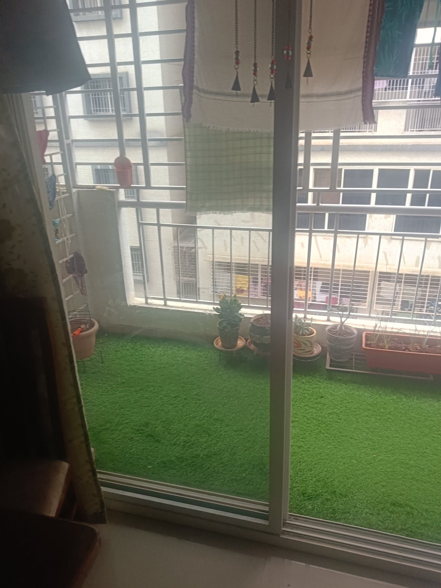
After / Completed Work🚪🦟 Mosquito Mesh Replacement Completed in Nobo Nagar, Bannerghatta Road, Bangalore! 🦟🚪
Another successful mosquito mesh replacement service completed by Kutbi Aluminium Glass & Hardware at Nobo Nagar, Bannerghatta Road, Bangalore.
Our team replaced the damaged mosquito mesh with a high-quality, durable mesh, ensuring better protection from mosquitoes, insects, and pests while maintaining proper airflow and ventilation.
✅ Mosquito Mesh Replacement
✅ Window Mesh Repair & Installation
✅ Velcro Mosquito Mesh
✅ Magnetic Mosquito Mesh
✅ Balcony & Door Mosquito Nets
✅ Professional Service & On-Time Completion
If your mosquito net is torn, damaged, or worn out, contact Kutbi Aluminium Glass & Hardware for reliable and affordable mosquito mesh replacement services across Bangalore.
📍 Nobo Nagar, Bannerghatta Road, Bangalore
📞 9979204616
#MosquitoMeshReplacement #MosquitoNetBangalore #MosquitoMeshBangalore #WindowMosquitoNet #MosquitoScreenReplacement #BannerghattaRoad #NoboNagar #KutbiAluminiumGlassAndHardware #MosquitoMeshInstallation #WindowRepairBangalore #UPVCWindowRepair #AluminiumWindowsBangalore #BangaloreServices #HomeImprovementBangalore
🚪🔧 Urgent Partition Door Repair Work Completed Successfully 🔧🚪
🛠️ Aluminium Window Repair📍 Gottigerry Bannerghatta road📅 2026-08-24
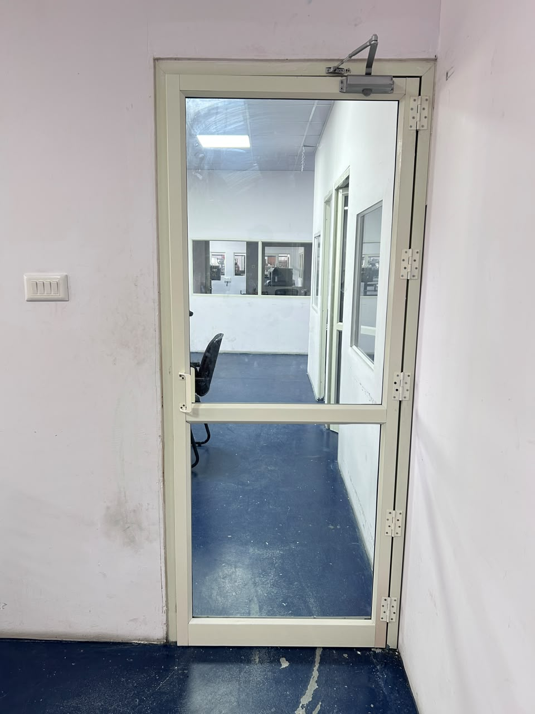
After / Completed Work🚪🔧 Urgent Partition Door Repair Work Completed Successfully 🔧🚪
Kutbi Aluminium Glass & Hardware recently completed an urgent partition door repair service with a quick response and professional workmanship.
Our team inspected the issue, repaired the damaged partition door, adjusted the alignment, checked the hardware, and restored smooth operation to ensure safety and functionality.
✅ Partition Door Repair
✅ Aluminium Partition Maintenance
✅ Door Alignment Correction
✅ Lock & Handle Repair
✅ Door Closure Adjustment
✅ Office Partition Door Service
✅ Quick & Reliable Emergency Repairs
Whether it's an office, shop, commercial space, or residential partition door, we provide prompt repair solutions across Bangalore.
📞 Call: 9979204616
📍 Serving Bannerghatta Road, Gottigere, JP Nagar, Arekere, Hulimavu, Electronic City, and nearby areas.
For partition door repair, aluminium partition repair, office door repair, and emergency door maintenance services in Bangalore, trust Kutbi Aluminium Glass & Hardware.
#PartitionDoorRepair #AluminiumPartitionRepair #OfficeDoorRepair #DoorRepairBangalore #EmergencyDoorRepair #AluminiumDoorRepair #CommercialDoorRepair #KutbiAluminiumGlassAndHardware #BangaloreServices #DoorMaintenance #BannerghattaRoad #Gottigere
uPVC Window Repair in Begur, Bangalore | Kutbi Aluminium Glass & Hardware
🛠️ uPVC Window Repair📍 Begur, Bangalore📅 2026-08-22
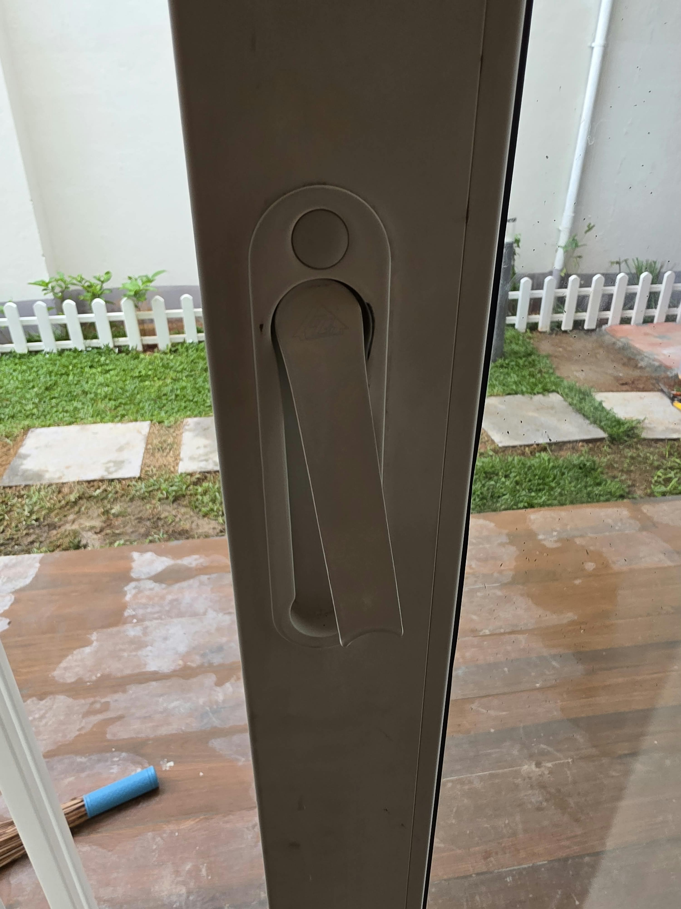
After / Completed WorkUPVC Sliding Door Lock Repair & Replacement
UPVC sliding door lock repair and replacement completed by Kutbi Aluminium Glass & Hardware in Bangalore.
We provide professional UPVC sliding door lock repair, lock replacement, sliding door handle replacement, lock mechanism repair, and jammed UPVC door repair. Our team handles residential and commercial UPVC doors with neat and reliable workmanship.
📍 Serving Bangalore and nearby areas
📞 Call/WhatsApp: 9979204616
#UPVCSlidingDoor #UPVCDoorRepair #UPVCDoorLockRepair #UPVCDoorLockReplacement #UPVCDoorRepairBangalore #UPVCWindowsBangalore #SlidingDoorRepair #DoorLockRepair #DoorLockReplacement #WindowAndDoorRepair #KutbiAluminium #KutbiAluminiumGlassAndHardware #Bangalore #BangaloreHomeServices
Mosquito Net Replacement & Installation in BTM 4th Stage, Bangalore | Kutbi Aluminium Glass & Hardware
🛠️ Mosquito Mesh Replacement📍 BTM 4th Stage, Bangalore📅 2026-08-22
 Before
Before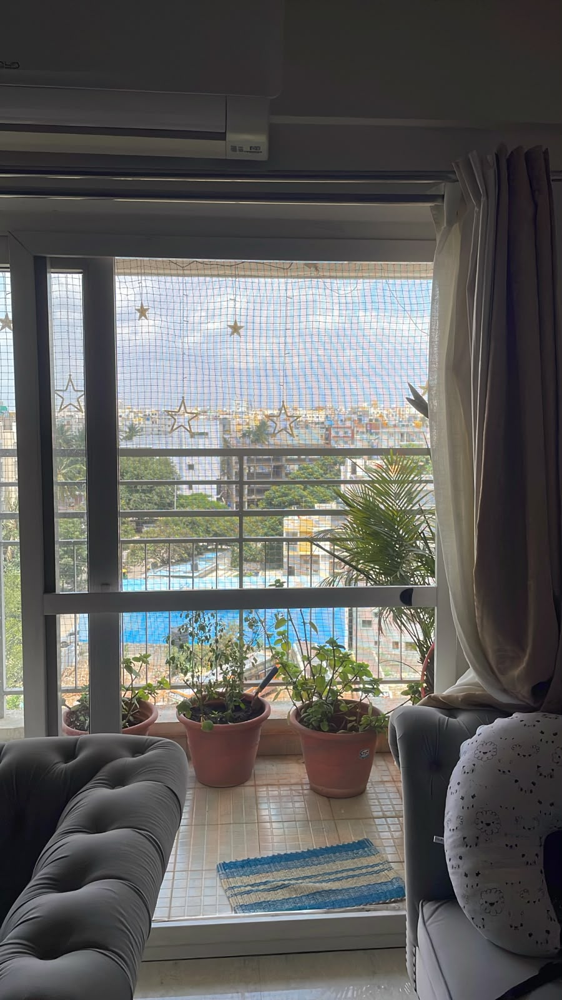
After / Completed WorkProfessional mosquito net replacement and installation completed at BTM 4th Stage, Bangalore by Kutbi Aluminium Glass & Hardware. The damaged mosquito mesh was replaced with a neatly fitted solution for improved insect protection and airflow.
Broken glass replacement done by kutbi team at electronic City bangalore
🛠️ Aluminium Window Repair📍 Electronic City bangalore📅 2026-08-21
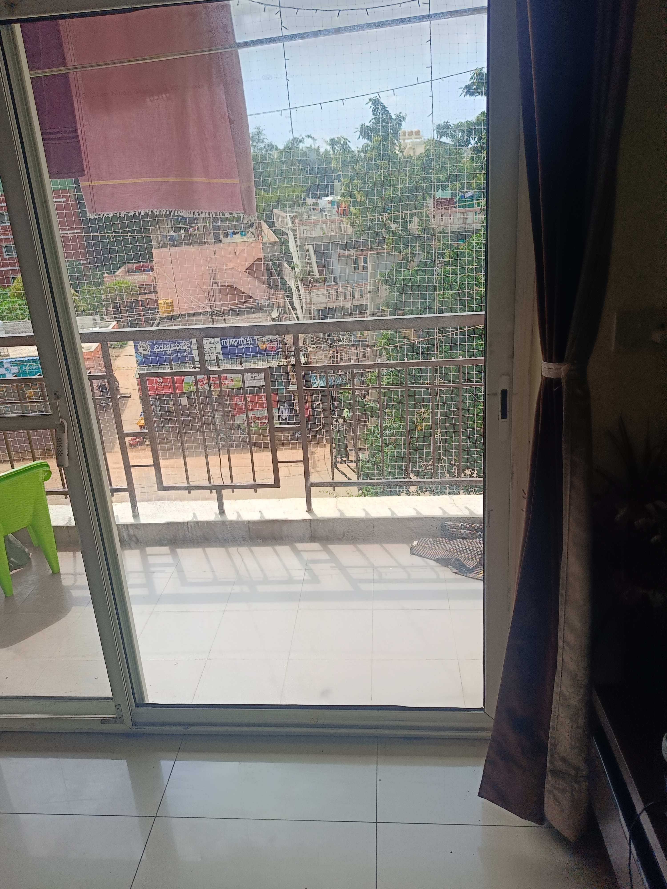
After / Completed WorkBroken glass replacement done by kutbi Aluminium glass and hardware for the sliding window at electronic City bangalore.
UPVC Openable Door Lock Repair
🛠️ uPVC Door Repair📍 Akshay nagar bangalore📅 2026-08-20
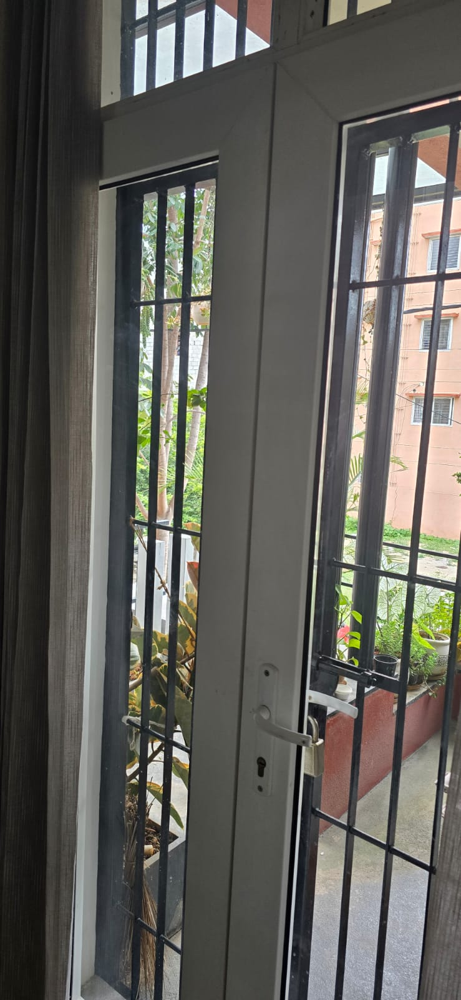
After / Completed WorkUPVC Openable Door Lock Repair
UPVC openable door lock not locking, unlocking, or operating smoothly? 🔧🚪
Kutbi Aluminium Glass & Hardware provides professional UPVC openable door lock repair and replacement in Bangalore. We repair faulty locks, damaged locking mechanisms, handles, cylinders, and related UPVC door hardware.
✅ UPVC Openable Door Lock Repair
✅ UPVC Door Lock Replacement
✅ Lock Mechanism Repair
✅ UPVC Door Handle Repair & Replacement
✅ Locking & Unlocking Issues
✅ Professional On-Site Repair Service
📍 Serving Bannerghatta Road, Gottigere, Arekere, JP Nagar, BTM Layout, Begur, Electronic City and other areas of Bangalore.
📞 Call Kutbi Aluminium Glass & Hardware: 9979204616
#UPVCDoorRepair #UPVCDoorLockRepair #UPVCDoorLockReplacement #UPVCDoorsBangalore #UPVCWindowRepair #DoorLockRepairBangalore #UPVCRepairBangalore #DoorRepairBangalore #KutbiAluminium #AluminiumGlassHardware #Bangalore
Aluminium sliding window wheels replacement and service
🛠️ Aluminium Window Repair📍 Gottigerry Bannerghatta road📅 2026-08-20
 After / Completed Work
After / Completed WorkStuck window roller replacement for aluminium sliding window done